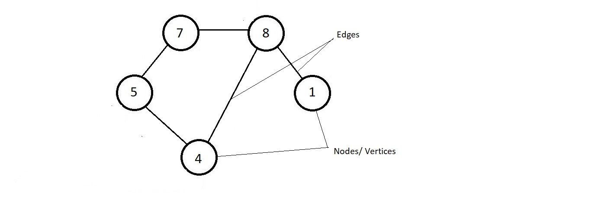
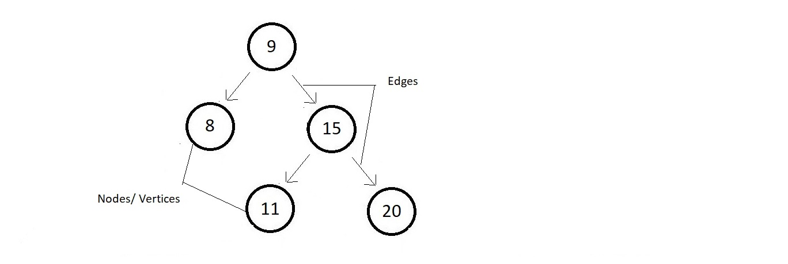
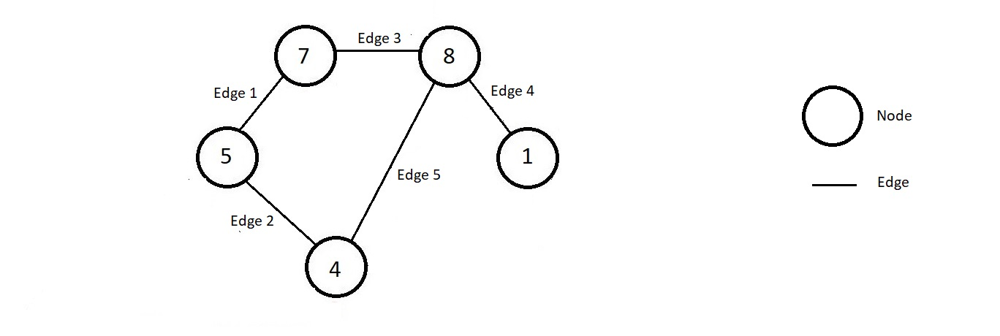
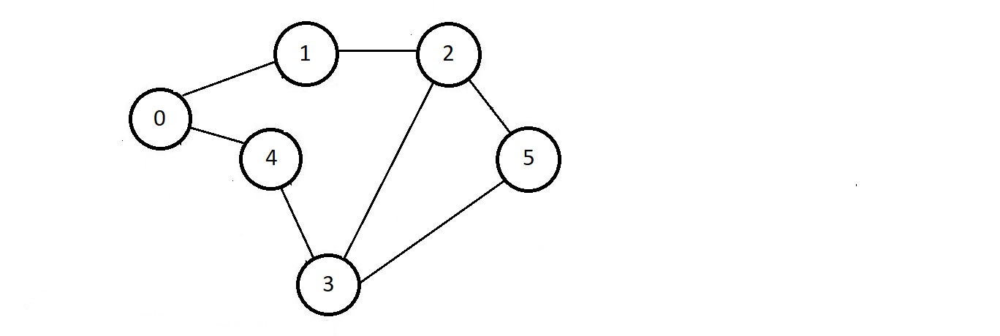
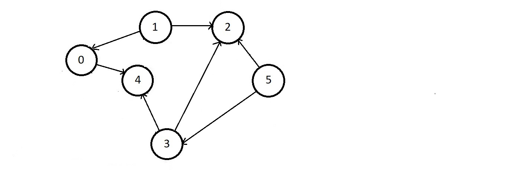
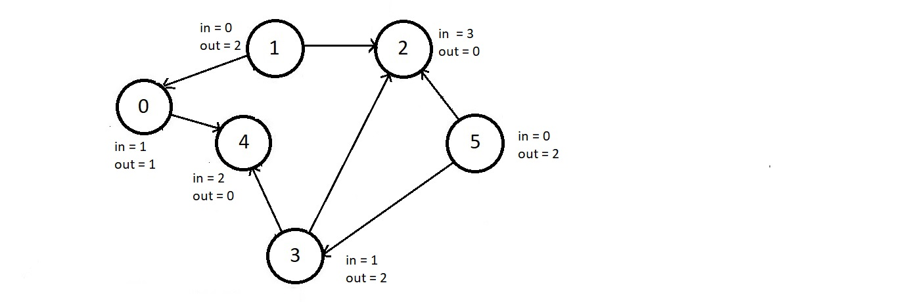

Introduction to Graphs
What is a Graph?
- All the data structures we have learned so far have either
- Linear data structure → Array, linked lists and stacks
- Non linear hierarchical data structure → BST & AVL trees
- Graph is an example of Non Linear data structure
- A graph is a collection of nodes connected through edges.
- Example of a simple graph
 - Trees are also a type of graph.
follow the illustration of a tree below.
 - A tree is also a collection of nodes and edges, and hence is a graph only.
Nodes/Vertices and Edges:
- A vertex or node is one fundamental unit/entity of which graphs are formed.
- Nodes are the data containing parts, connected with each other using edges.
- An edge is uniquely defined by its 2 endpoints or the two nodes it is connecting.
- You can take the analogy of people in a network, or a widespread chain, where people could be representing the nodes and their connections in the network could be represented using edges.
- It is a structure.

Formal Definition of graph:
- A graph G = (V, E) is technically a collection of vertices and edges connecting these vertices.
- Follow the below illustrated graph for reference
 - Here, V is the set of all the vertices. Therefore V = (0, 1, 2, 3, 4 ,5) and E is the set of all edges, therefore E = {(0, 1), (1, 2), (0, 4), (4, 3), (3, 5), (2, 5), (2, 3)}
- Every edge connects the poir they are represented with.
- Edge (0, 1) connects node 0 to 1.
- And, hence a graph is always represented using its set of vertices, V and its set of edges, E in the form G = (V, E).
Applications of graphs
- Graphs have a wide range of applications in our world.
- Learning also becomes a necessity for anyone pursuing software development due to its applications
- Graphs are used to model social networks such as facebook or linkedin.
- Graphs are also used to monitor website backlinks, internal employee networks, etc.
- Major use would be Maps application like google maps
- Another major application is their use to solve problems like is there a path between two locations on a map and if there is, which one is the shortest.
Types of Edges:
- Directed Edge ↓
- A directed edge is an edge connecting two nodes but strictly defines the way it is connected from and to.
- The analogy of facebook's follow feature, where if you follow someone, then it's not that the other person followed you too. It's just one way
- Another great example is that of a hyperlink, where one can even link google.com to their own websites on the internet, but then google.com would not necessarily link your website to their page.
- Undirected Edge ↓
- An undirected edge is an edge connecting two nodes without any defined way.
- Below example shows node 1 connecting to node 2, and at the same time node 2 connecting to node 1.
- You can take the analogy of facebook's friend feature, where if you make someone a friend, they you too become their friend, so it's both ways.

According to the type of edges that a graph has, graphs can be further divided into two types.
Types of graphs
- Directed graphs ↓
- Directed graphs are graphs having each of its edges directed.
- One examples of directed graphs is :
- Undirected Graphs ↓
- The graphs having each of its edges are undirected.
- One of the examples of directed graph is :
Indegree and Outdegree of a node
- Indegree of a node is the number of edges coming to the node
- Outdegree of a node is the number of edges originating from that node.
- Consider the directed graph below
 - We can write the indegree represented by in and outdegree represented by out, in
the above graphs for each of these nodes.

Let's talk about one real-life example of graphs - a graph of users - Facebook!
- Althoug the users using facebook need not understand the graph theory, once you create your profile here, facebook uses graphs to model relationships between nodes.
- We can apply graphs algorithms to suggest friends to people, calculate the number of mutual friends, etc.
- Other examples of graphs include the result of a web crawl for website or for the entire would wibe web, city routes as seen on Google Maps, etc. Further more, different search engines have different web network models